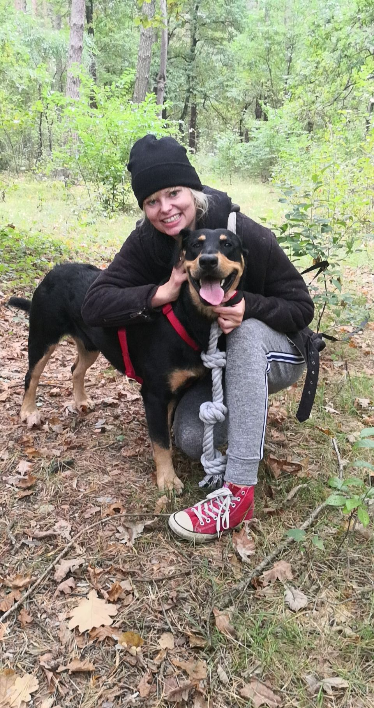

Psia szkoła, w której trenujesz razem ze swoim psem
Spacery socjalizacyjne na leśnych trasach Wawra i zajęcia w salce treningowej. Ty prowadzisz psa, ja tłumaczę, co widzę i co zmienić — w małych grupach, bez metod awersyjnych i bez oceniania.
Rezerwacja przyjęta!
Wydarzenie zostało utworzone w systemie, a oficjalne zaproszenie wysłane do Twojego Kalendarza Google.
Jak wygląda jedno spotkanie?
Od zapisu do zadania, z którym wychodzisz do domu.
-
1
Wybierasz zajęcia i termin online
Spacer socjalizacyjny, zajęcia w salce albo trening jeden na jeden — plus krótka informacja o psie. Zajmuje to mniej niż minutę.
-
2
Dostajesz potwierdzenie i zaproszenie
E-mail z podsumowaniem oraz zaproszenie w Kalendarzu Google. Z ekranu potwierdzenia możesz też dodać termin do własnego kalendarza jednym kliknięciem.
-
3
Spotykamy się — na trasie albo w salce
Jesteś cały czas ze swoim psem i to Ty go prowadzisz. Ja pokazuję, jak czytać jego sygnały, dobieram dystans i tempo do grupy.
-
4
Wychodzisz z zadaniem do pracy
Po spotkaniu dostajesz krótką notatkę: nad czym pracujemy i co ćwiczyć do następnego razu, żeby efekt nie zniknął po tygodniu.
Przejrzyste stawki, płatność na miejscu
Płacisz po spotkaniu — gotówką lub BLIK-iem. Bez pakietów, bez zobowiązań na przyszłość.
🔒 Bezpłatna zmiana terminu do 24 godzin przed spotkaniem. Trening indywidualny i konsultacje prowadzone są jeden na jeden, konsultacja obejmuje dojazd do Ciebie.
Co mówią opiekunowie
Dlaczego to działa lepiej niż zwykły spacer?
Nie chodzi o „wybieganie psa”. Uczysz się czytać swojego psa i pracować z nim w realnych warunkach — na trasie i w sali.
Trening w realnych warunkach
Spacer socjalizacyjny to praca w prawdziwym świecie: zapachy, rowerzyści, inne psy. Trasy w otulinie Mazowieckiego Parku Krajobrazowego dają bodźce, ale bez miejskiego hałasu.
Salka treningowa w Wawrze
Kontrolowane warunki do pracy nad posłuszeństwem, koncentracją i lękami. Ćwiczenie można powtórzyć tyle razy, ile trzeba — bez samochodów i zaskoczeń za rogiem.
Dobierane grupy
Na trasie maksymalnie 3 psy, w salce do 4, a dla psów lękliwych — najwyżej 2. Łączymy psy pod kątem energii i temperamentu, żeby żaden nie czuł się przytłoczony.
Ty też się uczysz
Nie zostawiasz psa i nie wychodzisz — cały czas pracujesz ze swoim psem. Ja tłumaczę, co widzę, i podpowiadam, co zmienić, żeby pies rozumiał, czego od niego chcesz.

Cześć, tu Niko! (@Niko.w.podrozy)
Prowadzę małą szkołę dla opiekunów i ich psów. Wierzę, że najwięcej zmienia nie praca „za opiekuna”, ale wspólne ćwiczenie — dlatego na moich zajęciach jesteś cały czas przy swoim psie i to Ty go prowadzisz.
Nie stosuję metod awersyjnych ani pośpiechu. Stawiam na zrozumienie psiej mowy ciała, węszenie i budowanie zaufania — na leśnych trasach Wawra i w salce treningowej.
Do zobaczenia na trasie i w salce! 🐾Wszystko, co warto wiedzieć przed zapisem
Jak wygląda pierwszy spacer socjalizacyjny?
Spotykamy się w ustalonym punkcie i idziemy całą grupą. Ty prowadzisz swojego psa, ja pokazuję, jak czytać jego sygnały i kiedy zwiększyć dystans. Zaczynamy od zapoznania na odległość — bez kontaktu na siłę i bez presji.
Jak wygląda pierwsze zajęcie w salce?
Krótkie omówienie, rozgrzewka i konkretne zadania: posłuszeństwo, koncentracja na opiekunie, spokój w obecności innych psów. Pracujemy w tempie dopasowanym do grupy, a ćwiczenie powtarzamy tyle razy, ile trzeba.
Gdzie dokładnie się spotykamy?
Spacery socjalizacyjne startują na terenie Wawra (Anin, Międzylesie), przy wejściu na trasy leśne. Zajęcia grupowe i trening indywidualny odbywają się w salce treningowej w Wawrze, a konsultacja — z moim dojazdem do Ciebie. Dokładny punkt spotkania potwierdzam razem z rezerwacją.
Co zabrać na zajęcia?
Wygodną smycz (nie flexi), smakołyki pokrojone na drobne kawałki i ulubioną zabawkę. Jeśli pies pracuje w kagańcu albo nosi szele, zabierz je ze sobą. Na trasę warto wziąć wodę dla psa.
Ile trwa spotkanie i od czego liczy się czas?
Czas trwania każdego rodzaju zajęć znajdziesz w cenniku. Podana godzina to moment startu w umówionym miejscu — liczymy od początku pracy z psem, a nie od wyjścia z domu.
Czy mogę przyjść na zajęcia bez psa albo z drugą osobą?
Na pierwsze spotkanie możesz przyjść sam, żeby wszystko zobaczyć. Na zajęcia możecie przyjść we dwójkę — jedna osoba pracuje z psem, druga się przygląda i uczy się tego samego.
Czy pies musi mieć aktualne szczepienia?
Tak. Prosimy o aktualne szczepienia oraz zabezpieczenie przed pasożytami zewnętrznymi. Jeśli pies jest w trakcie leczenia albo ma chorobę zakaźną, przesuniemy spotkanie na później — dla bezpieczeństwa jego i pozostałych psów.
Czy pies musi być wykastrowany?
Nie stawiamy tego jako warunku. W grupie prosimy jednak o informację o cieczce — w takim terminie zamieniamy zajęcia grupowe na trening indywidualny.
Czy przyjmujesz psy lękowe lub reaktywne?
Tak — prowadzę dla nich osobne zajęcia: w bardzo małej grupie (najwyżej 2 psy) albo indywidualnie w salce. Pracujemy w takim dystansie, w jakim pies jest jeszcze w stanie się uczyć. Napisz w uwagach, czego się spodziewać.
Co w przypadku złej pogody?
Zajęcia w salce odbywają się niezależnie od pogody. Spacery socjalizacyjne przekładamy przy ulewie, burzy lub skrajnych upałach — odezwę się z propozycją nowego terminu.
Jak mogę odwołać lub zmienić termin?
Możesz bezpłatnie zmienić termin do 24 godzin przed spotkaniem — wystarczy odpowiedzieć na e-mail z rezerwacją lub zadzwonić.
Jak wygląda płatność i co z moimi danymi?
Płacisz po spotkaniu — gotówką lub BLIK-iem, bez zaliczek i pakietów. Dane z formularza wykorzystuję wyłącznie do obsługi rezerwacji i kontaktu; szczegóły znajdziesz w informacji RODO w stopce.